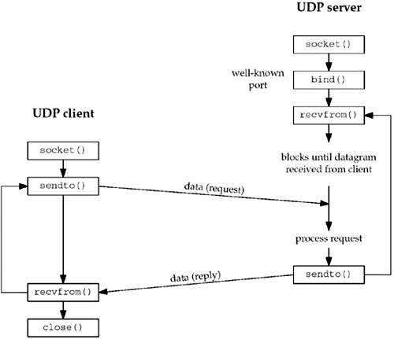

| [ Team LiB ] |
|
8.1 IntroductionThere are some fundamental differences between applications written using TCP versus those that use UDP. These are because of the differences in the two transport layers: UDP is a connectionless, unreliable, datagram protocol, quite unlike the connection-oriented, reliable byte stream provided by TCP. Nevertheless, there are instances when it makes sense to use UDP instead of TCP, and we will go over this design choice in Section 22.4. Some popular applications are built using UDP: DNS, NFS, and SNMP, for example. Figure 8.1 shows the function calls for a typical UDP client/server. The client does not establish a connection with the server. Instead, the client just sends a datagram to the server using the sendto function (described in the next section), which requires the address of the destination (the server) as a parameter. Similarly, the server does not accept a connection from a client. Instead, the server just calls the recvfrom function, which waits until data arrives from some client. recvfrom returns the protocol address of the client, along with the datagram, so the server can send a response to the correct client. Figure 8.1. Socket functions for UDP client/server. Figure 8.1 shows a timeline of the typical scenario that takes place for a UDP client/server exchange. We can compare this to the typical TCP exchange that was shown in Figure 4.1. In this chapter, we will describe the new functions that we use with UDP sockets, recvfrom and sendto, and redo our echo client/server to use UDP. We will also describe the use of the connect function with a UDP socket, and the concept of asynchronous errors. |
| [ Team LiB ] |
|